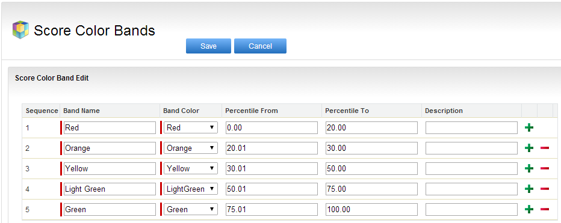
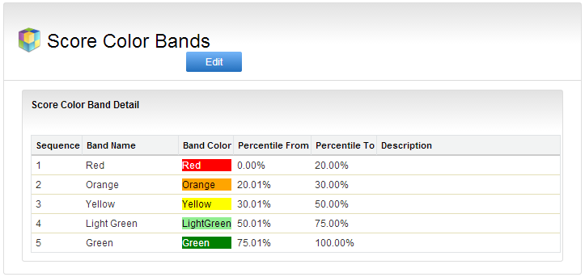

Setting up Score Color Bands
The next step in Scorecard configuration is to define the Scorecard Color Bands. Bands provide the basis for your Metric Rating, allowing you to rate performance using colors.
Scorecard allows you to define up to six colors, or six band rows. For example, you can set up and use Green, Light Green, Yellow, Orange, Red or Green as Band colors.

The following table provides the details on different Score Color Band rating metrics:
|
Field Name |
Description |
|---|---|
|
Sequence |
Provides the Sequence of the Color Band. |
|
Band Name |
Name of the band. Using the Band Color in the name is recommended. For example, the band name can be Red for the Red Band Color. |
|
Band Color |
Color of the Band that you specify for a given percentile range. Based on it, you can determine the rating and performance. For example, you can define the color Red for the score falling under the percentile range of 0-20%. |
|
Percentile From |
Percentile range start number for a given Band. |
|
Percentile To |
Percentile range end number for a given Band. |
|
Description |
Enter the detailed description of the Color band. |
Suppose the score percentile is between 0-20%, then it falls under the Red Color Band. For example, in a score out of 1-100 scale, if the score is 20 or 19, it would be considered as Red but if the Score is 22, it is considered as Yellow, depending upon your Band Color definition.
To set up score color bands
The page refreshes to display the color bands you just defined.
